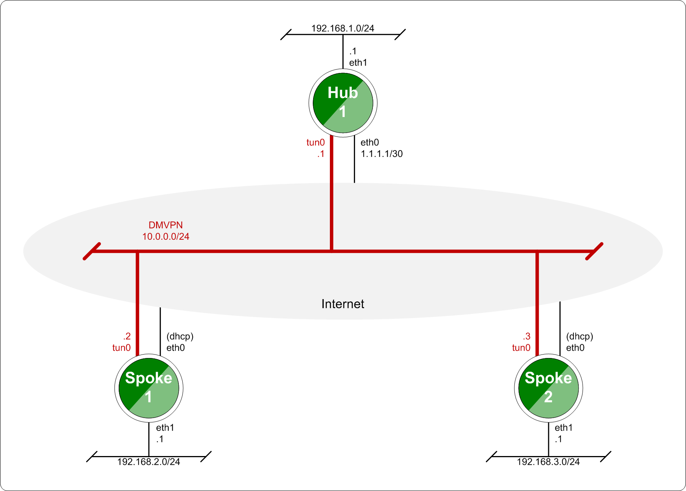
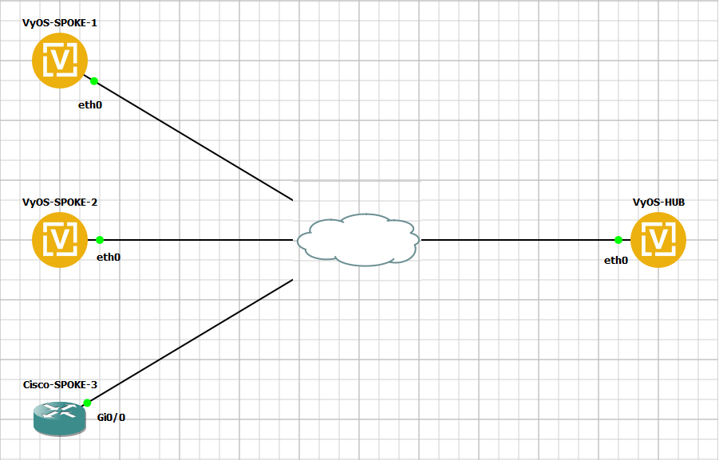

DMVPN
DMVPN is a dynamic VPN technology originally developed by Cisco. While their implementation was somewhat proprietary, the underlying technologies are actually standards based. The three technologies are:
NHRP provides the dynamic tunnel endpoint discovery mechanism (endpoint registration, and endpoint discovery/lookup), mGRE provides the tunnel encapsulation itself, and the IPSec protocols handle the key exchange, and crypto mechanism.
In short, DMVPN provides the capability for creating a dynamic-mesh VPN network without having to pre-configure (static) all possible tunnel end-point peers.
Note
DMVPN only automates the tunnel endpoint discovery and setup. A complete solution also incorporates the use of a routing protocol. BGP is particularly well suited for use with DMVPN.


Baseline DMVPN topology
Configuration
Tunnel interface configuration
NHRP never handles routing of prefixes itself. You need to run some real routing protocol (e.g. BGP) to advertise routes over the tunnels. What nhrpd does it establishes ‘shortcut routes’ that optimizes the routing protocol to avoid going through extra nodes in NBMA GRE mesh.
NHRP does route NHRP domain addresses individually using per-host prefixes. This is similar to Cisco FlexVPN, but in contrast to opennhrp which uses a generic subnet route.
To create NBMA GRE tunnel you might use the following:
set interfaces tunnel tun100 address '10.0.0.1/32'
set interfaces tunnel tun100 enable-multicast
set interfaces tunnel tun100 encapsulation 'gre'
set interfaces tunnel tun100 ip adjust-mss '1360'
set interfaces tunnel tun100 mtu '1400'
set interfaces tunnel tun100 parameters ip key '42'
set interfaces tunnel tun100 source-interface 'eth0'
Please refer to the Tunnel documentation for the individual tunnel related options.
Note
The IP-address is assigned as host prefix to tunnel interface. NHRP will automatically create additional host routes pointing to tunnel interface when a connection with these hosts is established.
The tunnel interface subnet prefix should be announced by routing protocol from the hub nodes (e.g. BGP ‘network’ announce). This allows the routing protocol to decide which is the closest hub and determine the relay hub on prefix basis when direct tunnel is not established.
NHRP protocol configuration
Enables Cisco style authentication on NHRP packets. This embeds the plaintext password to the outgoing NHRP packets. Maximum length of the password is 8 characters.
Holdtime is the number of seconds that have to pass before stopping to advertise an NHRP NBMA address as valid. It also controls how often NHRP registration requests are sent. By default registrations are sent every one third of the holdtime
tunnel-ip - Tunnel ip address in format x.x.x.x.
nbma-ip - NBMA ip address in format x.x.x.x or local
Map an IP address of a station to the station’s NBMA address.
nbma-ip - NBMA ip address in format x.x.x.x or dynamic
Sends multicast packets to the specified NBMA address. If dynamic is specified then destination NBMA address (or addresses) are learnt dynamically.
network-id - NHRP network id <1-4294967295>
Enable NHRP on this interface and set the interface’s network ID. The network ID is used to allow creating multiple nhrp domains on a router when multiple interfaces are configured on the router. Interfaces configured with the same ID are part of the same logical NBMA network. The ID is a local only parameter and is not sent to other NHRP nodes and so IDs on different nodes do not need to match. When NHRP packets are received on an interface they are assigned to the local NHRP domain for that interface.
tunnel-ip - Tunnel ip address in format x.x.x.x or dynamic
nbma-ip - NBMA ip address in format x.x.x.x
Configure the Next Hop Server address and its NBMA address. If dynamic is specified then Next Hop Server can have dynamic address which maps to its NBMA address.
This enable redirect replies on the NHS similar to ICMP redirects except this is managed by the nhrp protocol. This setting allows spokes to communicate with each others directly.
Allow the client to not set the unique flag in the NHRP packets. This is useful when a station has a dynamic IP address that could change over time.
IPSEC configuration
Please refer to the IPsec General Information documentation for the individual IPSec related options.
Note
NHRP daemon based on FRR nhrpd. It controls IPSEC. That’s why ‘close-action’ parameter in IKE configuration always is set to ‘close’ and ‘dead-peer-detection action’ always is set to ‘clear’.
Bind IPSEC profile to the specific tunnel interface.
Monitoring
Example
This blueprint uses VyOS as the DMVPN Hub and Cisco IOSv 15.5(3)M and VyOS as multiple spoke sites.


DMVPN Network Topology Diagram
Each node (Hub and Spoke) uses an IP address from the network 10.0.0.0/24.
The below referenced IP address 192.168.0.2 is used as example address representing a global unicast address under which the HUB can be contacted by each and every individual spoke.
Configuration
Hub
VyOS-HUB-1
set interfaces ethernet eth0 address '192.168.0.2/30'
set interfaces tunnel tun100 address '10.0.0.100/32'
set interfaces tunnel tun100 enable-multicast
set interfaces tunnel tun100 encapsulation 'gre'
set interfaces tunnel tun100 parameters ip key '42'
set interfaces tunnel tun100 source-interface 'eth0'
set protocols nhrp tunnel tun100 authentication 'test123'
set protocols nhrp tunnel tun100 holdtime '300'
set protocols nhrp tunnel tun100 multicast 'dynamic'
set protocols nhrp tunnel tun100 network-id '1'
set protocols nhrp tunnel tun100 redirect
set protocols nhrp tunnel tun100 registration-no-unique
set protocols static route 0.0.0.0/0 next-hop 192.168.0.1
set vpn ipsec esp-group ESP-HUB lifetime '1800'
set vpn ipsec esp-group ESP-HUB mode 'transport'
set vpn ipsec esp-group ESP-HUB pfs 'dh-group2'
set vpn ipsec esp-group ESP-HUB proposal 1 encryption 'aes256'
set vpn ipsec esp-group ESP-HUB proposal 1 hash 'sha1'
set vpn ipsec ike-group IKE-HUB key-exchange 'ikev1'
set vpn ipsec ike-group IKE-HUB lifetime '3600'
set vpn ipsec ike-group IKE-HUB proposal 1 dh-group '2'
set vpn ipsec ike-group IKE-HUB proposal 1 encryption 'aes256'
set vpn ipsec ike-group IKE-HUB proposal 1 hash 'sha1'
set vpn ipsec interface 'eth0'
set vpn ipsec profile NHRPVPN authentication mode 'pre-shared-secret'
set vpn ipsec profile NHRPVPN authentication pre-shared-secret 'secret'
set vpn ipsec profile NHRPVPN bind tunnel 'tun100'
set vpn ipsec profile NHRPVPN esp-group 'ESP-HUB'
set vpn ipsec profile NHRPVPN ike-group 'IKE-HUB'
Note
Setting this up on AWS will require a “Custom Protocol Rule” for protocol number “47” (GRE) Allow Rule in TWO places. Firstly on the VPC Network ACL, and secondly on the security group network ACL attached to the EC2 instance. This has been tested as working for the official AMI image on the AWS Marketplace. (Locate the correct VPC and security group by navigating through the details pane below your EC2 instance in the AWS console).
Spokes
The individual spoke configurations only differ in interface IP addresses.
VyOS-Spoke-1 and VyOS-Spoke-2
set interfaces ethernet eth0 address '192.168.1.2/30'
set interfaces tunnel tun100 address '10.0.0.1/32'
set interfaces tunnel tun100 enable-multicast
set interfaces tunnel tun100 encapsulation 'gre'
set interfaces tunnel tun100 parameters ip key '42'
set interfaces tunnel tun100 source-interface 'eth0'
set protocols nhrp tunnel tun100 authentication 'test123'
set protocols nhrp tunnel tun100 holdtime '300'
set protocols nhrp tunnel tun100 multicast 'dynamic'
set protocols nhrp tunnel tun100 network-id '1'
set protocols nhrp tunnel tun100 nhs tunnel-ip dynamic nbma '192.168.0.2'
set protocols nhrp tunnel tun100 registration-no-unique
set protocols nhrp tunnel tun100 shortcut
set protocols static route 0.0.0.0/0 next-hop 192.168.1.1
set protocols static route 10.0.0.0/24 next-hop 10.0.0.100
set vpn ipsec esp-group ESP-HUB lifetime '1800'
set vpn ipsec esp-group ESP-HUB mode 'transport'
set vpn ipsec esp-group ESP-HUB pfs 'dh-group2'
set vpn ipsec esp-group ESP-HUB proposal 1 encryption 'aes256'
set vpn ipsec esp-group ESP-HUB proposal 1 hash 'sha1'
set vpn ipsec ike-group IKE-HUB key-exchange 'ikev1'
set vpn ipsec ike-group IKE-HUB lifetime '3600'
set vpn ipsec ike-group IKE-HUB proposal 1 dh-group '2'
set vpn ipsec ike-group IKE-HUB proposal 1 encryption 'aes256'
set vpn ipsec ike-group IKE-HUB proposal 1 hash 'sha1'
set vpn ipsec interface 'eth0'
set vpn ipsec profile NHRPVPN authentication mode 'pre-shared-secret'
set vpn ipsec profile NHRPVPN authentication pre-shared-secret 'secret'
set vpn ipsec profile NHRPVPN bind tunnel 'tun100'
set vpn ipsec profile NHRPVPN esp-group 'ESP-HUB'
set vpn ipsec profile NHRPVPN ike-group 'IKE-HUB'
Cisco-Spoke-3
crypto isakmp policy 10
encr aes 256
authentication pre-share
group 2
lifetime 3600
crypto isakmp key secret address 0.0.0.0
!
!
crypto ipsec transform-set DMVPNESP esp-aes 256 esp-sha-hmac
mode transport
!
crypto ipsec profile DMVPNPROFILE
set security-association lifetime seconds 1800
set transform-set DMVPNESP
set pfs group2
!
!
!
!
!
!
!
interface Tunnel100
ip address 10.0.0.3 255.255.255.0
no ip redirects
ip nhrp authentication test123
ip nhrp map multicast dynamic
ip nhrp network-id 1
ip nhrp holdtime 300
ip nhrp nhs 10.0.0.100 nbma 192.168.0.2
ip nhrp registration no-unique
ip nhrp redirect
tunnel source GigabitEthernet0/0
tunnel mode gre multipoint
tunnel key 42
tunnel protection ipsec profile DMVPNPROFILE
!
interface GigabitEthernet0/0
ip address 192.168.3.2 255.255.255.252
duplex auto
speed auto
media-type rj45
!
ip route 0.0.0.0 0.0.0.0 192.168.3.1
Monitoring DMVPN Network
Let send ICMP packets from VyOS-SPOKE-1 to Cisco-SPOKE-3
vyos@vyos:~$ ping 10.0.0.3
PING 10.0.0.3 (10.0.0.3) 56(84) bytes of data.
64 bytes from 10.0.0.3: icmp_seq=1 ttl=255 time=3.44 ms
64 bytes from 10.0.0.3: icmp_seq=2 ttl=255 time=3.07 ms
^C
--- 10.0.0.3 ping statistics ---
2 packets transmitted, 2 received, 0% packet loss, time 1002ms
rtt min/avg/max/mdev = 3.072/3.257/3.442/0.185 ms
Monitoring on HUB
vyos@vyos:~$ show ip nhrp cache
Iface Type Protocol NBMA Claimed NBMA Flags Identity
tun100 dynamic 10.0.0.1 192.168.1.2 192.168.1.2 T 192.168.1.2
tun100 dynamic 10.0.0.3 192.168.3.2 192.168.3.2 T 192.168.3.2
tun100 dynamic 10.0.0.2 192.168.2.2 192.168.2.2 T 192.168.2.2
tun100 local 10.0.0.100 192.168.0.2 192.168.0.2 -
vyos@vyos:~$ show vpn ipsec sa
Connection State Uptime Bytes In/Out Packets In/Out Remote address Remote ID Proposal
-------------------------- ------- -------- -------------- ---------------- ---------------- ----------- ----------------------------------
dmvpn-NHRPVPN-tun100-child up 3m46s 230B/270B 2/2 192.168.1.2 192.168.1.2 AES_CBC_256/HMAC_SHA1_96/MODP_1024
dmvpn-NHRPVPN-tun100-child up 5m48s 460B/540B 4/4 192.168.2.2 192.168.2.2 AES_CBC_256/HMAC_SHA1_96/MODP_1024
dmvpn-NHRPVPN-tun100-child up 16m26s 1K/1K 13/12 192.168.3.2 192.168.3.2 AES_CBC_256/HMAC_SHA1_96/MODP_1024
Monitoring on Spokes
vyos@vyos:~$ show ip nhrp cache
Iface Type Protocol NBMA Claimed NBMA Flags Identity
tun100 local 10.0.0.1 192.168.1.2 192.168.1.2 -
tun100 dynamic 10.0.0.3 192.168.3.2 192.168.3.2 T 192.168.3.2
tun100 nhs 10.0.0.100 192.168.0.2 192.168.0.2 T 192.168.0.2
vyos@vyos:~$ show ip nhrp nhs
Iface FQDN NBMA Protocol
tun100 192.168.0.2 192.168.0.2 10.0.0.100
vyos@vyos:~$ show ip nhrp shortcut
Type Prefix Via Identity
dynamic 10.0.0.3/32 10.0.0.3 192.168.3.2
vyos@vyos:~$ show vpn ipsec sa
Connection State Uptime Bytes In/Out Packets In/Out Remote address Remote ID Proposal
-------------------------- ------- -------- -------------- ---------------- ---------------- ----------- ----------------------------------
dmvpn-NHRPVPN-tun100-child up 6m43s 898B/695B 7/6 192.168.0.2 192.168.0.2 AES_CBC_256/HMAC_SHA1_96/MODP_1024
dmvpn-NHRPVPN-tun100-child up 49s 215B/187B 2/2 192.168.3.2 192.168.3.2 AES_CBC_256/HMAC_SHA1_96/MODP_1024